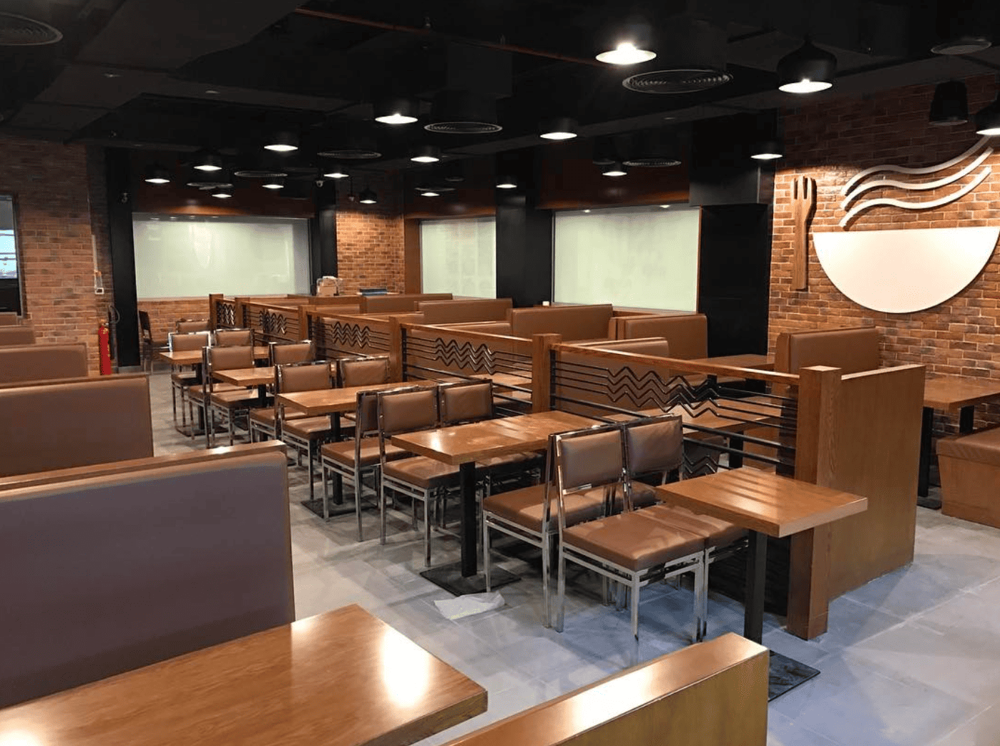

Spicebowl Restaurant
Social media content and launch-stage visibility for a restaurant in Dubai Mall.
Spicebowl was a restaurant located in Dubai Mall, and I worked with the brand as a freelance social media specialist from its launch phase. My role focused on creating food and restaurant content, managing social media platforms, and producing visual assets that helped the restaurant build visibility, communicate its location more clearly, and strengthen its digital presence.

Restaurant / Hospitality
Worked on launch-stage content and social media for a restaurant brand in a highly competitive mall environment.
Dubai Mall
The restaurant was located in the Fashion Parking area, which made discoverability an important communication challenge.
Instagram, Facebook, YouTube
Managed and created content across the restaurant’s core social platforms.
Better visibility and more footfall
The content strategy focused on showcasing the food, improving awareness, and helping customers find the restaurant more easily.
A new restaurant needed content that could attract attention and guide discovery
Restaurants in large malls compete heavily for attention. Spicebowl not only needed appealing food and brand content, but also clearer visibility support because the location was not the easiest for visitors to find.
The challenge
The restaurant needed engaging content that showcased the food, atmosphere, and experience while also helping potential customers understand where the restaurant was located inside Dubai Mall.
What the work needed to do
- Create visually appealing food and restaurant content
- Build an active presence across social platforms
- Show the dining experience and kitchen environment
- Produce practical content that improved discoverability
- Support the restaurant’s launch and early visibility
Content production, social media management, and visual brand support
I handled the content side of the restaurant’s digital presence from planning through publishing. That included videography, photography, editing, social media management, and graphic design support for digital and print needs.
Content creation
- Planned and shot food and restaurant videos
- Created food photography for digital channels
- Edited videos for publishing across platforms
- Produced content from pre-production to post-production
Social and design support
- Managed Facebook, Instagram, and YouTube presence
- Monitored social media activity and analytics
- Created graphic designs for digital channels
- Designed print items such as menu cards, business cards, and offer flyers
Launch-stage content and social media built around visibility
The work combined creative production with practical marketing needs. It was not only about making the food look appealing. It was also about helping the restaurant become more discoverable and visually active online.
Food photography
Captured food and restaurant visuals for use across social media and digital promotion.
- Shot menu and dining visuals
- Focused on presentation and appetite appeal
- Created content suited for restaurant social media
- Supported ongoing visual storytelling for the brand
Videography and video editing
Produced restaurant videos from planning and shooting through editing and publishing.
- Created kitchen and preparation videos
- Produced dish-focused and experience-led content
- Edited videos for social and YouTube use
- Handled the process from concept to final output
Location discovery content
Created practical content that helped customers understand how to reach the restaurant more easily.
- Produced a video showing how to get there from Dubai Mall Metro
- Helped improve discoverability for a less obvious location
- Used content to solve a real customer friction point
- Turned visibility challenges into useful brand communication
Social media management
Managed the restaurant’s social channels to keep the brand active and visually engaging.
- Handled Facebook and Instagram content
- Published video content to YouTube
- Monitored activity and engagement
- Supported a more active digital brand presence
Graphic design
Created visual assets used across digital platforms and print materials.
- Designed social media graphics
- Created offer flyers and promotional visuals
- Supported menu and business card design
- Helped keep the brand visually consistent
Launch-phase support
Worked with the restaurant from its start, helping shape the early digital content direction.
- Supported launch-stage visibility
- Built content around awareness and footfall
- Contributed to the restaurant’s early digital identity
- Helped the brand become more visible from day one
What this work changed
Spicebowl gained a more active social presence and content library during its launch phase, with visuals that helped the restaurant look more appealing online and content that improved discoverability.
Stronger visual presence
Regular food photography and video content helped the restaurant build a more engaging and polished social media presence.
Better discoverability
A location-guidance video reportedly helped people find the restaurant more easily, solving a real-world visibility issue.
Launch-stage support
Being involved from the restaurant’s opening allowed me to shape the early digital presence and content direction.
Examples from the workstream
These examples show the type of visual and video content produced for Spicebowl’s social and digital platforms.

Food and dining visuals
Food photography created to make the restaurant more visually appealing across social media and digital channels.

Restaurant experience video
A video example showing the restaurant environment and the type of content produced for its social platforms.

Food feature video
Dish-focused video content created to showcase menu items and drive interest through visual storytelling.
What this project says about how I work
- I create content that balances visual appeal with real marketing utility.
- I can handle the full content workflow from idea to shoot to edit to publishing.
- I understand how social media content can support both brand visibility and customer action.
- I bring creative execution and practical business thinking into the same project.
Want to see another project?
Explore another case study covering education, logistics, healthcare consulting, or real estate performance marketing.